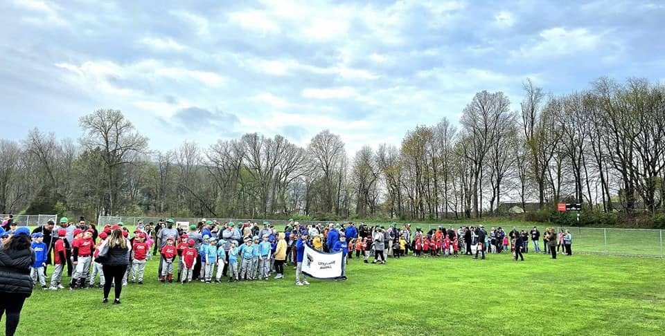

Find a program for your child
FUN-damentals gives the youngest players a grown-up-and-me introduction to hitting, throwing, catching and running the bases. In Tee Ball, children hit off a tee and learn positions and teamwork. See the baseball registration options for FUN-damentals and both Tee Ball practice days.
Baseball and softball Coach Pitch introduce hitting a moving ball and playing as a team. Compare the baseball divisions and softball divisions for older players and player-pitch options.
How league age works
Baseball
Baseball league age is based on your child’s age on . Tee Ball has its own eligibility dates. Check the Tee Ball options in Sports Connect for birthday eligibility. FUN-damentals players must be 4 by the start of the season.
Softball
Softball league age is based on your child’s age on . This cutoff applies to all softball divisions.
The league may adjust initial placement after evaluations. See the Little League age charts or email the league if you’re between divisions.
Evaluations, practices and games
, noon to 6 p.m., at Brinckerhoff Elementary School. Evaluations are mandatory. Expect an assigned slot of one to two hours and more details in late February.
Opening Day is , weather permitting. The rain date is . Games run through the last weekend of June.
Baseball practices
Practices generally start in March. Tee Ball practices begin after Opening Day.
Softball practices
Practices generally start in March or early April.
Many teams meet two to three times a week between practices and games. Minors Player Pitch and Majors generally play one weeknight game and one Saturday game. Instructional teams may also play twice a week. Some teams may travel to play neighboring leagues in Philipstown, Wappingers Falls, Hyde Park or Red Hook.
What should we bring?
Start with a glove that fits, a labeled water bottle and comfortable clothes your player can move in. Ask your coach or email the league before buying a bat, helmet or cleats. Your division can confirm what’s required and what equipment is available to share.
Where will we play?
Our main fields are at Robert G. Shepheard Memorial Park on Route 82 in Fishkill. Some events and practices take place at Doug Phillips Park in Brinckerhoff. Check your team schedule for the park and field for each game or practice.
Fishkill Little League has served Southern Dutchess families since 1954. Read the league’s history to learn how volunteers built the programs and fields.
How can our family volunteer?
The league charges one refundable $50 volunteer fee per family. The fee is returned at the end of the season after the family volunteers. See ways to volunteer, including coaching, serving as a team parent, field maintenance, concessions and fundraising.